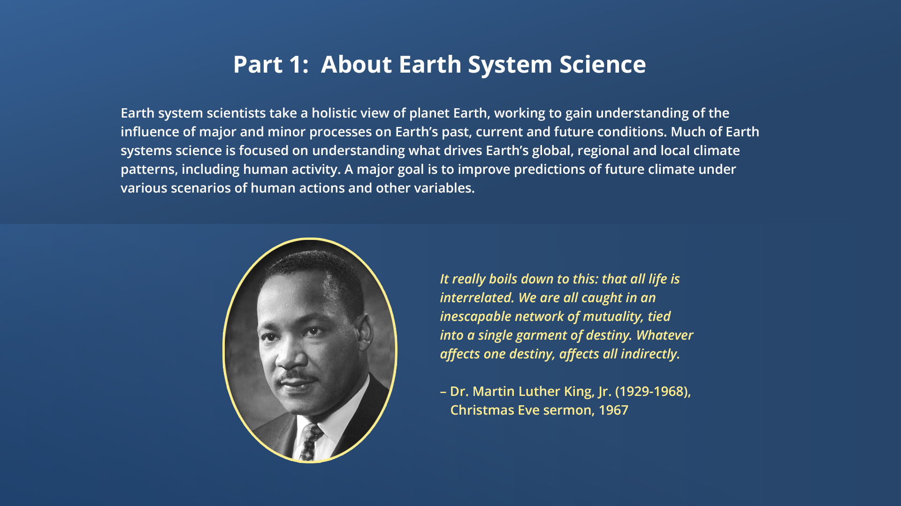
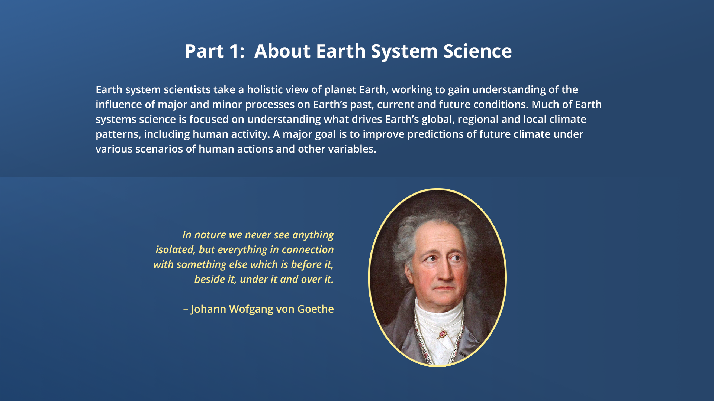
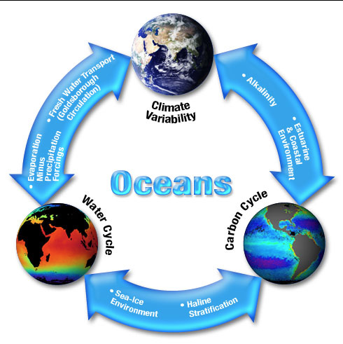
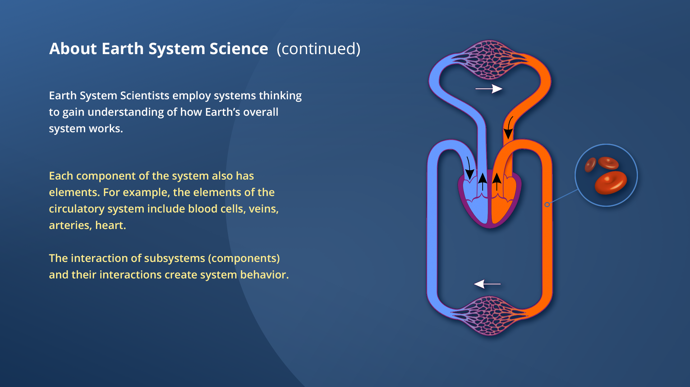

Part 1: About Earth System Science
Earth system scientists take a holistic view of planet Earth, working to gain understanding of the influence of major and minor processes on Earth’s past, current and future conditions. Much of Earth systems science is focused on understanding what drives Earth’s global, regional and local climate patterns, including human activity. A major goal is to improve predictions of future climate under various scenarios of human actions and other variables.

“Learn how to see. Realize that everything is connected to everything else.”
- Leonardo Da Vinci, 1452-1519


“It really boils down to this: that all life is interrelated. We are all caught in an inescapable network of mutuality, tied into a single garment of destiny. Whatever affects one destiny, affects all indirectly.”
- Dr. Martin Luther King, Jr. (1929-1968), Christmas Eve sermon, 1967

“In nature we never see anything isolated, but everything in connection with something else which is before it, beside it, under it and over it.”
- Johann Wolfgang von Goethe
“One could not pluck a flower without troubling a star.”
- Francis Thompson

